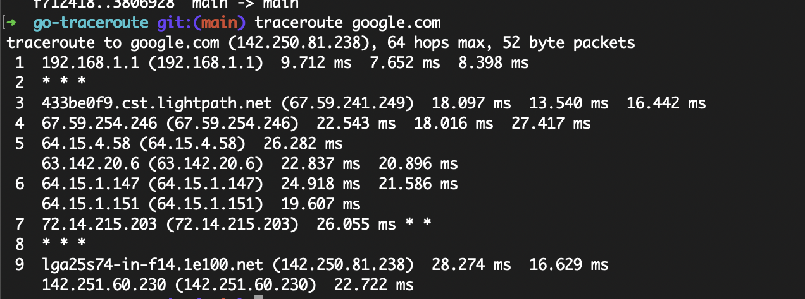
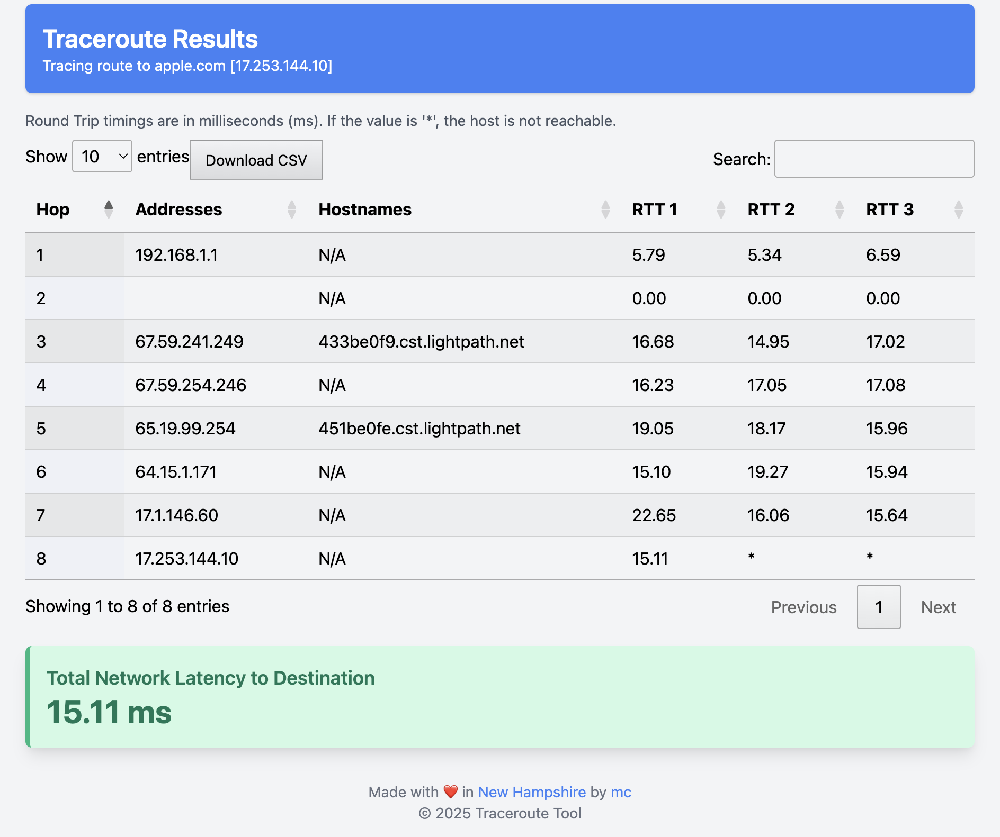
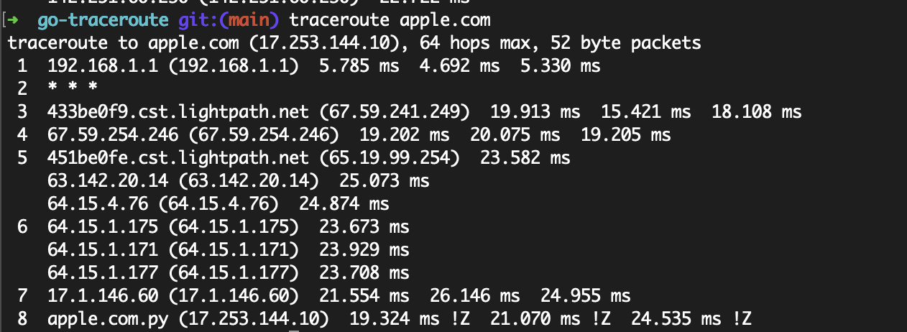

Traceroute Tool
A powerful Go-based CLI tool to trace the route to a destination host, display results in an interactive HTML DataTable, and calculate network latency.
Get StartedFeatures
Traceroute Execution
Trace the route to a destination host using ICMP packets and display each hop with IP addresses, hostnames, and RTTs.
Interactive HTML Output
View traceroute results in an interactive DataTable with sorting, searching, pagination, and CSV export.
Network Latency
Calculate and display the total network latency to the destination in a prominent KPI format.
How Traceroute Works
Traceroute is a network diagnostic tool that maps the route packets take from your computer to a destination host. Here’s how this tool implements traceroute:
- Send ICMP Echo Requests: The tool sends ICMP Echo Request packets to the destination with increasing Time-To-Live (TTL) values, starting from 1.
- Receive ICMP Replies: Each hop along the path decrements the TTL. When the TTL reaches 0, the router at that hop sends an ICMP Time Exceeded message back, revealing its IP address.
- Reach the Destination: The process continues until an ICMP Echo Reply is received from the destination (indicating the packet has reached the target) or the maximum hop limit (30) is reached.
- Measure RTTs: For each hop, the tool sends three packets and measures the round-trip time (RTT) for each packet, displaying the results in milliseconds.
- Resolve Hostnames: The tool performs reverse DNS lookups to resolve IP addresses to hostnames, displaying "N/A" if no hostname is found.
- Generate HTML Output: The results are rendered into an interactive HTML DataTable with features like sorting, searching, pagination, and CSV export. The total network latency to the destination is displayed in a KPI format.
Installation
🔹 Step 1: Install Go
Ensure you have Go installed on your system. You can download it from the official website:
Download Go🔹 Step 2: Install Dependencies
The Traceroute Tool requires the following Go packages for ICMP and IPv4 functionality:
go get golang.org/x/net/icmp
go get golang.org/x/net/ipv4
🔹 Step 3: Download the Source Code
The source code is available on GitHub. Clone the repository or download the traceroute.go file:
Direct link to the source code file:
traceroute.goDirect link to the macOS binary:
traceroute🔹 Step 4: Build and Run
Navigate to the directory containing traceroute.go, build the tool using Go, and run it with sudo (required for raw socket access):
go build traceroute.go
sudo ./traceroute -host google.com -output traceroute_results.html
This will generate an HTML file (traceroute_results.html) with the traceroute results.
macOS - traceroute google.com output
 macOS - traceroute apple.com output
Source Code and Binary
The source code for the Traceroute Tool is hosted on GitHub. You can view or download it using the link below:
View traceroute.go on GitHubDirect link to the macOS binary:
tracerouteTo clone the entire repository, use the following command:
git clone https://github.com/mohan-chinnappan-n5/go-traceroute.git